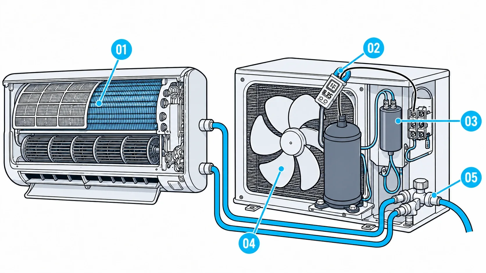
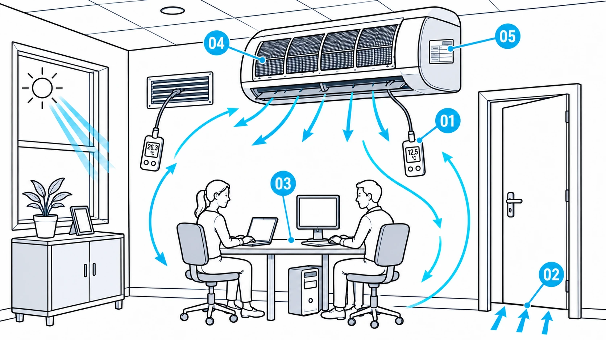
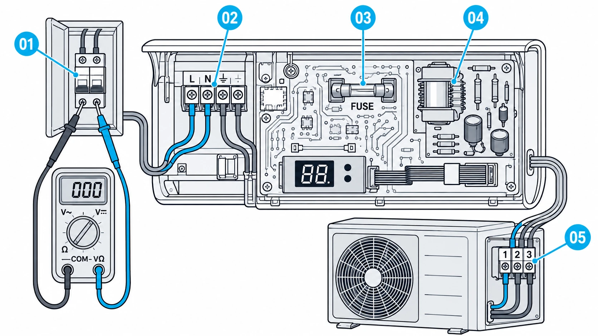

D-001 · NÃO GELA
Liga, mas não gela
Confira filtro e serpentinaFluxo fraco é sujeira
PREÇO DE LANÇAMENTO DO GELOPRO: R$ 37,00 UMA VEZ, SEM MENSALIDADE
É preço de lançamento enquanto juntamos os primeiros depoimentos de técnicos. Quando eles entrarem nesta página, o preço sobe, e o aviso sai aqui antes.
Abra no celular pelo sintoma, com o aparelho aberto na sua frente. Cada verificação traz o número que confirma ou descarta a causa. Ou imprima a ficha em 1 folha A4.

É sensor, placa, capacitor ou falta de gás? Você sai do cômodo, procura vídeo, manda no grupo e espera.
Sem resposta, decide no chute. Troca a peça, o aparelho volta a falhar e o cliente liga de novo.
E na hora de dizer o preço, você ainda monta o orçamento de cabeça, na frente dele.
A ficha de PDF para no diagnóstico.Mostra a peça, mas deixa você sozinho na hora de dar o preço na frente do cliente.
No GeloPRO cada ficha termina no botão que transforma o diagnóstico em orçamento.Com a Tabela 2026, assinatura e Pix, antes de você descer da escada.
D-001 · NÃO GELA
Liga, mas não gela
Confira filtro e serpentinaFluxo fraco é sujeira

D-003 · NÃO GELA
Ar frio, sala quente
Meça o Delta TDe 10 a 14 °C: gela

D-023 · NÃO LIGA
Não liga, display apagado
Meça CA no disjuntorSem 220V: rede da casa
Quantas peças você ainda vai trocar antes de ter certeza do defeito?
QUERO ACESSAR AGORABloco 01Não Gela e Baixo Rendimento
Bloco 02Não Liga e Desligamento Inesperado
Bloco 03Elétrica, Disjuntor e Partida
Bloco 04Água, Gelo e Drenagem
Bloco 05Ruídos, Vibração e Ventilação
Bloco 06Controle, Comando e Sensores
Bloco 07Códigos de Erro e Piscadas
Bloco 08Split Inverter e Placas Eletrônicas
O valor de cada bônus é o preço típico, na Tabela GeloPRO 2026 (aparelho de 9.000 a 12.000 BTU/h), do serviço que ele ajuda você a cobrar ou a não perder.
Você mede a placa na ordem antes de condenar: IPM, barramento 310 V CC, UVW, motor DC e sensores. Mostra ao cliente o ponto medido e cobra o reparo da placa.
Referência: Reparo de Placa ou IPM.
Você lê o código na hora, no celular, com busca por código e marca, e fecha a visita no mesmo dia, sem "vou pesquisar e te retorno".
Referência: Visita e Diagnóstico.
NTC (kΩ × °C) e pressão × temperatura R-410A, R-32 e R-22, com calculadora. Você troca o sensor com o número na tela, não por eliminação.
Referência: Troca de Sensor NTC.
Placa e IPM, compressor e motor ventilador, com veredito. Você não perde o serviço do compressor por erro nem paga peça do bolso.
Referência: Troca de Compressor.
Matriz de viabilidade e laudo pronto. O cliente sai com o laudo assinado e você sai pago, mesmo quando o certo é não consertar.
Referência: Visita e Diagnóstico.
Linha longa, tubo estrangulado, vácuo, nicho, dreno, suporte e aterramento. Você prova que o defeito é da instalação e vende a correção.
Referência: Instalação Padrão de Split.
16 serviços por porte e orçamento em 1 toque. O cliente assina na tela e paga no Pix ali mesmo, sem você voltar para casa montar proposta.
Referência: Vazamento + Vácuo + Carga.
Valor de referência dos 7 bônus somados: R$ 3.510,00. No Plano Completo, eles vêm junto com as 120 fichas por R$ 37,00.
Plano Básico · Temporada 90 dias
R$ 19,90por 90 dias
Plano Completo Vitalício
R$ 37,00pagamento único
R$ 0,10 por dia no primeiro ano (R$ 37,00 ÷ 365), R$ 0,71 por semana, R$ 3,08 por mês.
Uma peça trocada sem necessidade custa mais que o Plano Completo.
Se as fichas não servirem para os aparelhos que você atende, ou se você só não quiser continuar, peça o reembolso dentro de 30 dias. O risco fica do nosso lado, porque você só sabe se a ficha serve usando no aparelho de verdade.
Para os dois. O Bloco 08 é só de Inverter e placas, e o bônus 1 traz os guias visuais da placa e do IPM.
Sim. As fichas são por sintoma e sistema. O bônus 2 traduz os códigos e as piscadas das marcas da base.
O foco é o diagnóstico. O bônus 6 separa o defeito de instalação do defeito do aparelho e leva direto ao orçamento da correção.
Sim. Cada ficha já vem com a ordem das verificações e o valor esperado de cada uma.
É consulta, não curso. Serve de checklist para não pular etapa e para os sintomas que aparecem pouco.
Não. Abra o GeloPRO uma vez com sinal e ele fica guardado no celular. Depois disso, as 120 fichas, as ilustrações, as tabelas e o orçamento em PDF funcionam em modo avião, na casa do cliente. Só o envio pelo WhatsApp espera o sinal voltar.
Você tem 30 dias para pedir o reembolso.